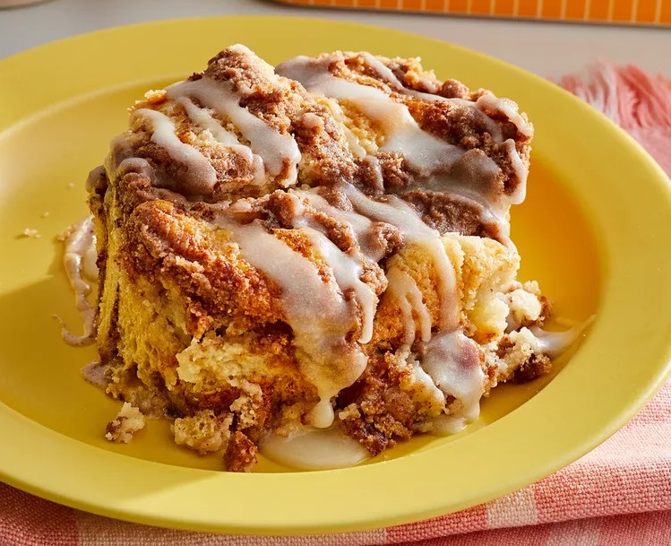

Cinnamon Roll Dump Cake

Ingredients
- 17.5 ounces premade cinnamon roll dough
- 16 ounces cream cheese frosting
- 0.5 cup toasted pecans
- 21.5 ounces cinnamon swirl coffee cake mix
- 0.75 cup salted butter
Nutrition Facts
- 799 calories
- 40g fat
- 105g carbs
- 6g protien
Directions
- Preheat oven to 350 degrees F (175 degrees C) and prep 9 by 13 inch baking pan.
- Cut cinnamon rolls into 1.5 inch pieces and place evenly in baking pan.
- Remove foil lining from frosting and microwave for 5 to 15 seconds.
- Spread frosting and pecans evenly over cut cinnamon rolls.
- Sprinkle cake mix evenly over cut cinnamon rolls and add butter slices across mixture.
- Bake for 40 to 45 minutes or until puffed and golden.